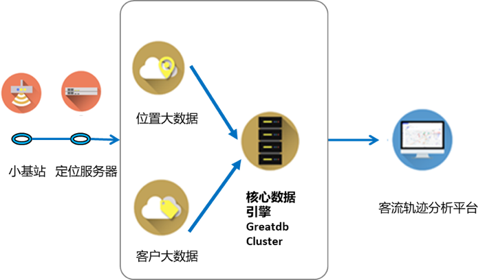

四川移动客流分析系统
四川移动客流分析系统
项目背景
四川移动积极响应国家号召，引入国产数据库，替换MySQL社区版进行改造，并适配川客客流业务分析应用，实现软件技术方面安全可控。
商场客流分析系统，通过分析商场用户的行为轨迹和画像，打造 “人、货、场” 紧密依存的消费场景和生态组合。通过打通场内场外，看清客从哪里来；借助大数据标签，认识客流更全面。
需求分析
本项目对数据库的需求主要包括：
（1）进行国产化试点，替换现有MySQL社区版，实现软件技术自主可控。
（2）在业务应用尽量不改动的前提下实现平滑迁移。
（3）目前MySQL社区版的运维工作基本靠人工实现，要求新数据库提供运维工具，能够减少现有运维工作量。
解决方案
项目通过部署2个节点的GreatDBCluster数据库集群，存储客流的位置数据和用户数据，支撑客流分析业务应用。

价值体现
项目使用万里开源数据库成功替换了MySQL社区版，实现了以下价值：
• 对MySQL应用实现99.5%透明迁移，完全遵循MySQL协议，应用程序几乎零改造。
• 解决了MySQL社区版在并发方面的性能痛点，最大支持256个用户并发请求，系统QPS最大吞吐量提升了5倍。
• 提供自动数据补齐功能，支持自动切换，减少人工干预，最大限度保障数据一致性。
• 自动化运维管理，支持第三方扩展，减少运维工作量和成本。